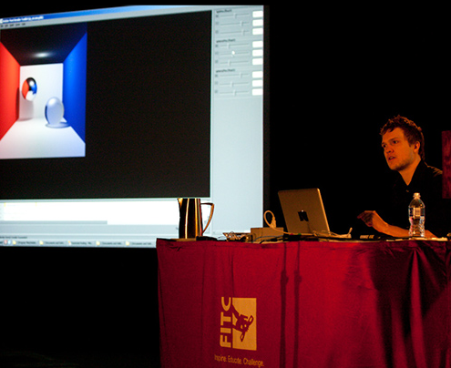

Photo courtesty of: Nathan Zahorchak
FITC 2010
I had the wonderful opportunity to speak at the FITC 2010 conference in Toronto.My presentation was titled "3D Graphics 101" and was primarily focused on teaching the fundamentals of the 3D pipeline from a ground up perspective.
However, I have to admit, I did take a few minutes at the end to quickly talk about real-time ray tracing using PixelBender (Adobe's tool for writing GPU shaders) at the end of the talk.